James Ryan Requeima
google scholar | x | bluesky | github | obeymath | travel blog | photosEmail: james.requeima@gmail.com
My Curriculum Vitae.
Machine Learning
I'm a research scientist at Google DeepMind in Montreal, Canada. I'm interested in meta-learning, neural processes, and using LLMs for probabilistic regression.
I was previously a postdoctoral fellow at the University of Toronto and the Vector Institute in Toronto, Canada. My supervisor is David Duvenaud.
My PhD was in machine learning at the University of Cambridge in the Computational and Biological Learning Lab. My advisor was Dr. Richard Turner.
I was recently a visiting student at MILA under the supervision of Yoshua Bengio.
Previously, I completed a Master's in machine learning, speech and language technology at the University of Cambridge where my advisor was Dr. Zoubin Ghahramani FRS.
Mathematics
At one point, I was a tenured member of the Department of Mathematics at Dawson College in Montréal. If you're looking for CEGEP-level materials and online resources, my colleagues and I maintain this website. You can also see my previously taught courses.
When studying mathematics, my specialization was geometric group theory, combinatorial group theory, and algebraic topology. I also completed a Master’s studying under Dani Wise FRS at McGill University, who was recently awarded a Guggenheim Fellowship and the Oswald Veblen Prize in Geometry.
Publications
| 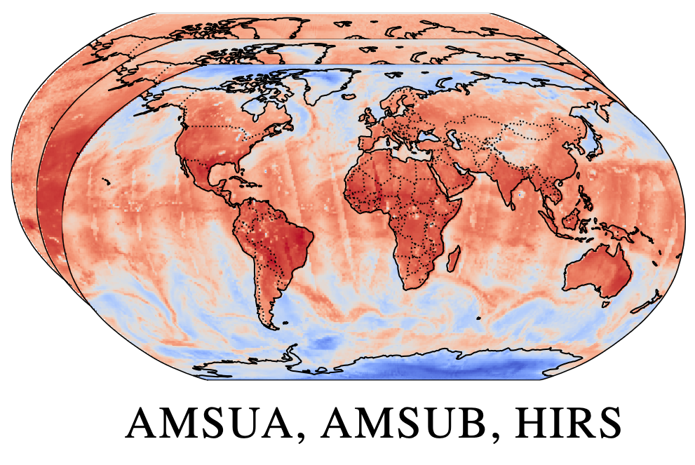 |
End-to-end data-driven weather forecasting
Machine learning is revolutionising medium-range weather prediction. However it has only been applied to specific and individual components of the weather prediction pipeline. Consequently these data-driven approaches are unable to be deployed without input from conventional operational numerical weather prediction (NWP) systems, which is computationally costly and does not support end-to-end optimisation. In this work, we take a radically different approach and replace the entire NWP pipeline with a machine learning model. We present Aardvark Weather, the first end-to-end data-driven forecasting system which takes raw observations as input and provides both global and local forecasts. These global forecasts are produced for 24 variables at multiple pressure levels at one-degree spatial resolution and 24 hour temporal resolution, and are skillful with respect to hourly climatology at five to seven day lead times. Local forecasts are produced for temperature, mean sea level pressure, and wind speed at a geographically diverse set of weather stations, and are skillful with respect to an IFS-HRES interpolation baseline at multiple lead-times. Aardvark, by virtue of its simplicity and scalability, opens the door to a new paradigm for performing accurate and efficient data-driven medium-range weather forecasting. Anna Vaughan, Stratis Markou, Will Tebbutt, James Requeima, Wessel Bruinsma, Michael Herzog, Nic Lane, J. Scott Hosking, Richard E. TurnerNature, 2025. paper |
| 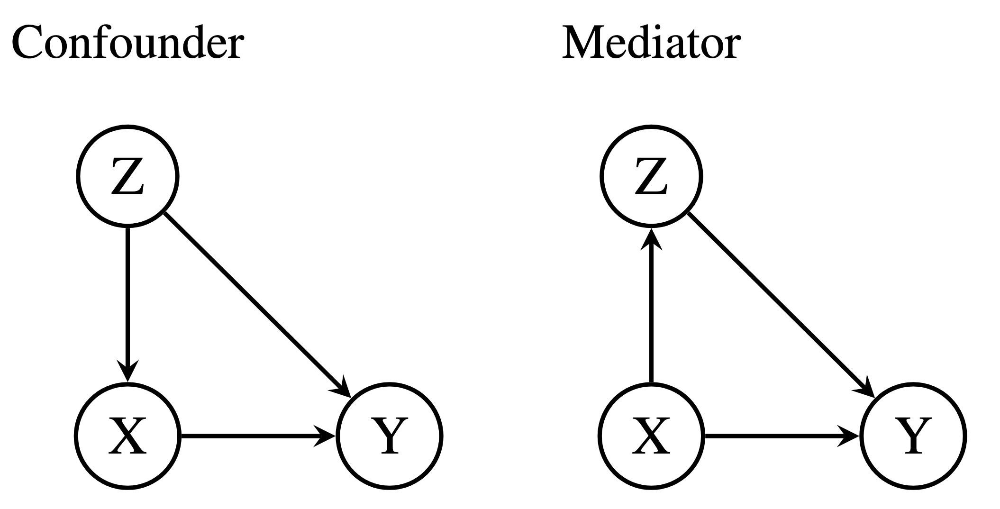 |
Estimating Interventional Distributions with Uncertain Causal Graphs through Meta-Learning.
In scientific domains -- from biology to the social sciences -- many questions boil down to \textit{What effect will we observe if we intervene on a particular variable?} If the causal relationships (e.g.~a causal graph) are known, it is possible to estimate the intervention distributions. In the absence of this domain knowledge, the causal structure must be discovered from the available observational data. However, observational data are often compatible with multiple causal graphs, making methods that commit to a single structure prone to overconfidence. A principled way to manage this structural uncertainty is via Bayesian inference, which averages over a posterior distribution on possible causal structures and functional mechanisms. Unfortunately, the number of causal structures grows super-exponentially with the number of nodes in the graph, making computations intractable. We propose to circumvent these challenges by using meta-learning to create an end-to-end model: the Model-Averaged Causal Estimation Transformer Neural Process (MACE-TNP). The model is trained to predict the Bayesian model-averaged interventional posterior distribution, and its end-to-end nature bypasses the need for expensive calculations. Empirically, we demonstrate that MACE-TNP outperforms strong Bayesian baselines. Our work establishes meta-learning as a flexible and scalable paradigm for approximating complex Bayesian causal inference, that can be scaled to increasingly challenging settings in the future. Anish Dhir, Cristiana Diaconu, Valentinian Mihai Lungu, James Requeima, Richard E. Turner Mark van der WilkTo be presented at Neural Information Processing Systems, 2025. paper |
| 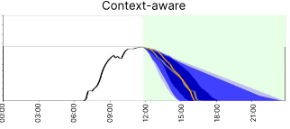 |
Context is Key: A Benchmark for Forecasting with Essential Textual Information
Forecasting is a critical task in decision making across various domains. While numerical data provides a foundation, it often lacks crucial context necessary for accurate predictions. Human forecasters frequently rely on additional information, such as background knowledge or constraints, which can be efficiently communicated through natural language. However, the ability of existing forecasting models to effectively integrate this textual information remains an open question. To address this, we introduce "Context is Key" (CiK), a time series forecasting benchmark that pairs numerical data with diverse types of carefully crafted textual context, requiring models to integrate both modalities. We evaluate a range of approaches, including statistical models, time series foundation models, and LLM-based forecasters, and propose a simple yet effective LLM prompting method that outperforms all other tested methods on our benchmark. Our experiments highlight the importance of incorporating contextual information, demonstrate surprising performance when using LLM-based forecasting models, and also reveal some of their critical shortcomings. By presenting this benchmark, we aim to advance multimodal forecasting, promoting models that are both accurate and accessible to decision-makers with varied technical expertise. Andrew Robert Williams*, Arjun Ashok*, Étienne Marcotte, Valentina Zantedeschi, Jithendaraa Subramanian, Roland Riachi, James Requeima, Alexandre Lacoste, Irina Rish, Nicolas Chapados, Alexandre DrouinInternational Conference on Machine Learning, 2025. paper | code | benchmark |
| 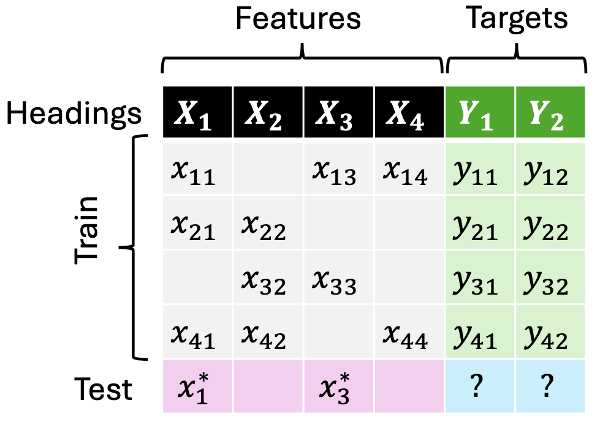 |
JoLT: Joint Probabilistic Predictions on Tabular Data Using LLMs.
We introduce a simple method for probabilistic predictions on tabular data based on Large Language Models (LLMs) called JoLT (Joint LLM Process for Tabular data). JoLT uses the in-context learning capabilities of LLMs to define joint distributions over tabular data conditioned on user-specified side information about the problem, exploiting the vast repository of latent problem-relevant knowledge encoded in LLMs. JoLT defines joint distributions for multiple target variables with potentially heterogeneous data types without any data conversion, data preprocessing, special handling of missing data, or model training, making it accessible and efficient for practitioners. Our experiments show that JoLT outperforms competitive methods on low-shot single-target and multi-target tabular classification and regression tasks. Furthermore, we show that JoLT can automatically handle missing data and perform data imputation by leveraging textual side information. We argue that due to its simplicity and generality, JoLT is an effective approach for a wide variety of real prediction problems. Aliaksandra Shysheya*, John Bronskill*, James Requeima, Shoaib Ahmed Siddiqui, Javier González, David Duvenaud, Richard E. TurnerIn submission, 2025. paper |
| 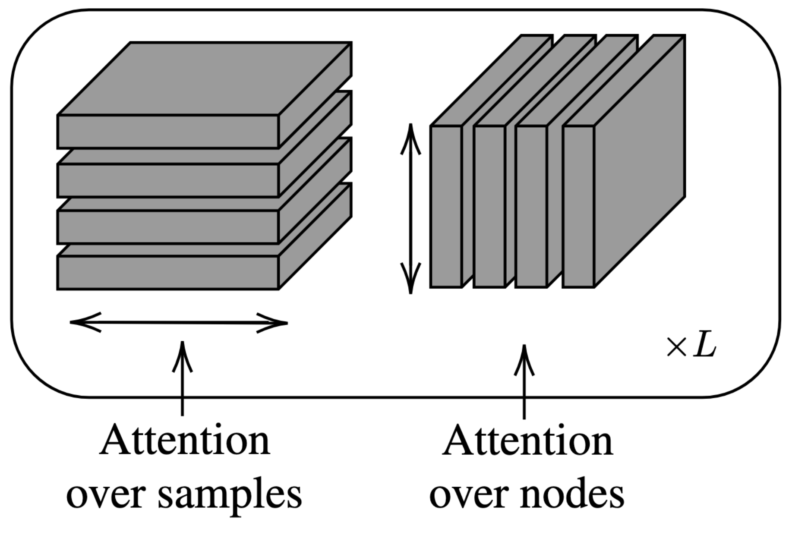 |
A Meta-Learning Approach to Bayesian Causal Discovery
Discovering a unique causal structure is difficult due to both inherent identifiability issues, and the consequences of finite data. As such, uncertainty over causal structures, such as those obtained from a Bayesian posterior, are often necessary for downstream tasks. Finding an accurate approximation to this posterior is challenging, due to the large number of possible causal graphs, as well as the difficulty in the subproblem of finding posteriors over the functional relationships of the causal edges. Recent works have used meta-learning to view the problem of estimating the maximum a-posteriori causal graph as supervised learning. Yet, these methods are limited when estimating the full posterior as they fail to encode key properties of the posterior, such as correlation between edges and permutation equivariance with respect to nodes. Further, these methods also cannot reliably sample from the posterior over causal structures. To address these limitations, we propose a Bayesian meta learning model that allows for sampling causal structures from the posterior and encodes these key properties. We compare our meta-Bayesian causal discovery against existing Bayesian causal discovery methods, demonstrating the advantages of directly learning a posterior over causal structure. Anish Dhir, Matt Ashman, James Requeima, Mark van der WilkInternational Conference on Learning Representations, 2025. paper | code |
| 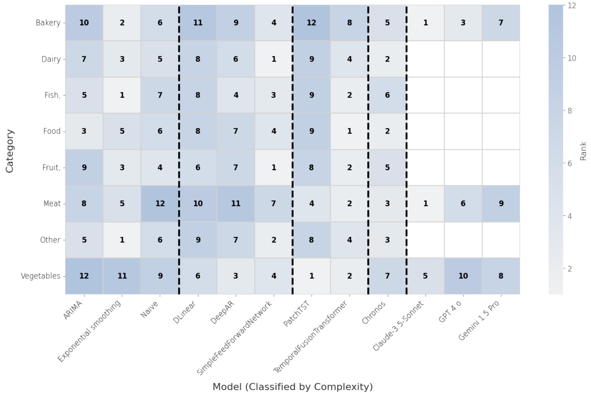 |
Food for thought: How can machine learning help better predict and understand changes in food prices?
In this work, we address a lack of systematic understanding of fluctuations in food affordability in Canada. Canada's Food Price Report (CPFR) is an annual publication that predicts food inflation over the next calendar year. The published predictions are a collaborative effort between forecasting teams that each employ their own approach at Canadian Universities: Dalhousie University, the University of British Columbia, the University of Saskatchewan, and the University of Guelph/Vector Institute. While the University of Guelph/Vector Institute forecasting team has leveraged machine learning (ML) in previous reports, the most recent editions (2024--2025) have also included a human-in-the-loop approach. For the 2025 report, this focus was expanded to evaluate several different data-centric approaches to improve forecast accuracy. In this study, we evaluate how different types of forecasting models perform when estimating food price fluctuations. We also examine the sensitivity of models that curate time series data representing key factors in food pricing. Kristina L. Kupferschmidt, James Requeima, Mya Simpson, Zohrah Varsallay, Ethan Jackson, Cody Kupferschmidt, Sara El-Shawa, Graham W. TaylorPreprint, 2024. paper |
|
Canada's Food Price Report 2025
This year marks the 15th edition of Canada's Food Price Report (CFPR), an annual publication produced collaboratively by Dalhousie University, the University of Guelph, the University of British Columbia, and the University of Saskatchewan. Each of these universities contributes to enriching the report's scope and regional expertise. The cross-country research team uses historical data sources, machine learning algorithms, and predictive analytics tools to forecast Canadian food prices. Sylvain Charlebois, Andrea Rankin, Stacey Taylor, Bryce Cross, Vlado Keselj, Stefanie Colombo, Tiff-Annie Kenny, John Keogh, Paola A. Marignani, Janet Music, Rick Nason, Armağan Özbilge, Samantha Taylor, Evan Fraser, Ethan Jackson, Kristina Kupferschmidt, Graham Taylor, Maria Corradini, Cody Kupferschmidt, Mya Simpson, Zohra Varsally, Sara El-Shawa, Paul Uys, James Requeima, Stuart Smyth, Claire Williams, Kate Sauser, Savannah Gleim, Kelleen Wiseman, Richard Barichello, Matias Margulis, Rebecca Feng, Janet Lord, Kim Humes, Jann McFarlaneEnglist Report | French Report |
|
| 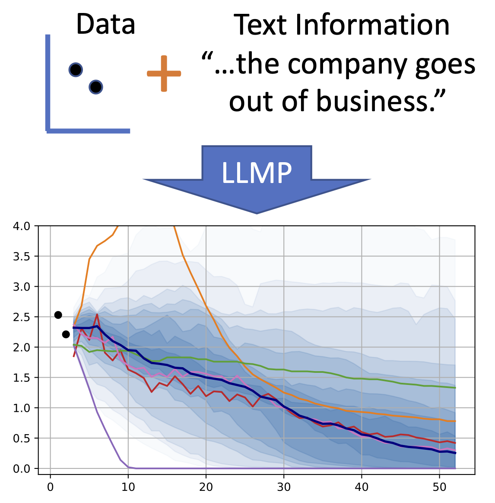 |
LLM Processes: Numerical Predictive Distributions Conditioned on Natural Language
Machine learning practitioners often face significant challenges in formally integrating their prior knowledge and beliefs into predictive models, limiting the potential for nuanced and context-aware analyses. Moreover, the expertise needed to integrate this prior knowledge into probabilistic modeling typically limits the application of these models to specialists. Our goal is to build a regression model that can process numerical data and make probabilistic predictions at arbitrary locations, guided by natural language text which describes a user's prior knowledge. Large Language Models (LLMs) provide a useful starting point for designing such a tool since they 1) provide an interface where users can incorporate expert insights in natural language and 2) provide an opportunity for leveraging latent problem-relevant knowledge encoded in LLMs that users may not have themselves. We start by exploring strategies for eliciting explicit, coherent numerical predictive distributions from LLMs. We examine these joint predictive distributions, which we call LLM Processes, over arbitrarily-many quantities in settings such as forecasting, multi-dimensional regression, black-box optimization, and image modeling. We investigate the practical details of prompting to elicit coherent predictive distributions, and demonstrate their effectiveness at regression. Finally, we demonstrate the ability to usefully incorporate text into numerical predictions, improving predictive performance and giving quantitative structure that reflects qualitative descriptions. This lets us begin to explore the rich, grounded hypothesis space that LLMs implicitly encode. James Requeima*, John Bronskill*, Dami Choi, David Duvenaud, Richard E. TurnerNeural Information Processing Systems, 2024. In-context Learning Workshop ICML (Best paper award), 2024. paper | code |
| 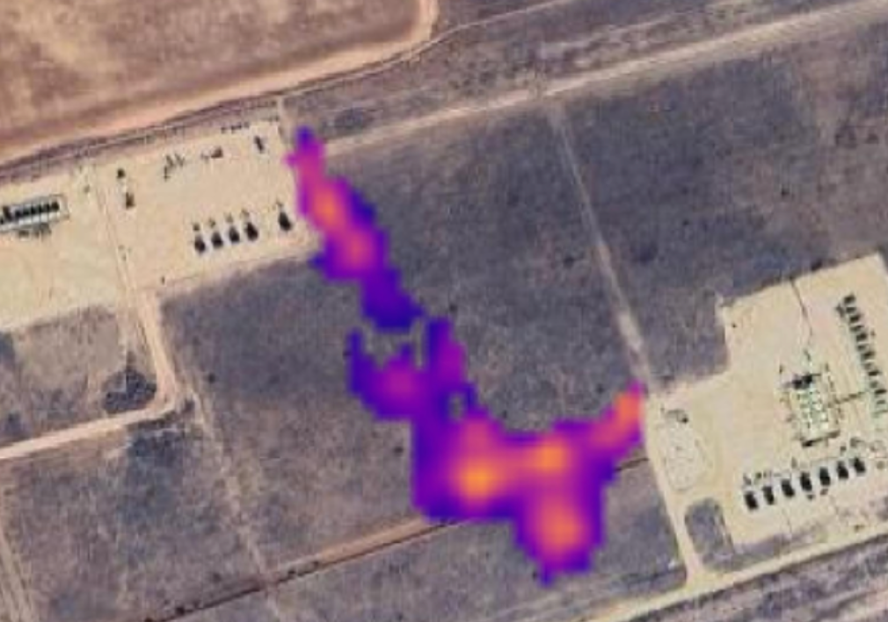 |
AI for Operational Methane Emitter Monitoring from Space
Mitigating methane emissions is the fastest way to stop global warming in the short-term and buy humanity time to decarbonise. Despite the demonstrated ability of remote sensing instruments to detect methane plumes, no system has been available to routinely monitor and act on these events. We present MARS-S2L, an automated AI-driven methane emitter monitoring system for Sentinel-2 and Landsat satellite imagery deployed operationally at the United Nations Environment Programme's International Methane Emissions Observatory. We compile a global dataset of thousands of super-emission events for training and evaluation, demonstrating that MARS-S2L can skillfully monitor emissions in a diverse range of regions globally, providing a 216% improvement in mean average precision over a current state-of-the-art detection method. Running this system operationally for six months has yielded 457 near-real-time detections in 22 different countries of which 62 have already been used to provide formal notifications to governments and stakeholders. Anna Vaughan, Gonzalo Mateo-Garcia, Itziar Irakulis-Loitxate, Marc Watine, Pablo Fernandez-Poblaciones, Richard E. Turner, James Requeima, Javier Gorroño, Cynthia Randles, Manfredi Caltagirone, Claudio CifarelliIn submission, 2025. paper |
| 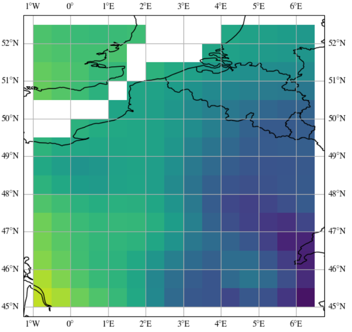 |
Translation Equivariant Transformer Neural Processes
The effectiveness of neural processes (NPs) in modelling posterior prediction maps---the mapping from data to posterior predictive distributions---has significantly improved since their inception. This improvement can be attributed to two principal factors: (1) advancements in the architecture of permutation invariant set functions, which are intrinsic to all NPs; and (2) leveraging symmetries present in the true posterior predictive map, which are problem dependent. Transformers are a notable development in permutation invariant set functions, and their utility within NPs has been demonstrated through the family of models we refer to as TNPs. Despite significant interest in TNPs, little attention has been given to incorporating symmetries. Notably, the posterior prediction maps for data that are stationary---a common assumption in spatio-temporal modelling---exhibit translation equivariance. In this paper, we introduce of a new family of translation equivariant TNPs that incorporate translation equivariance. Through an extensive range of experiments on synthetic and real-world spatio-temporal data, we demonstrate the effectiveness of TE-TNPs relative to their non-translation-equivariant counterparts and other NP baselines. Matt Ashman, Cristiana Diaconu, Junhyuck Kim, Lakee Sivaraya, Stratis Markou, James Requeima, Wessel Bruinsma, Richard E. TurnerInternational Conference on Machine Learning, 2024. paper |
| 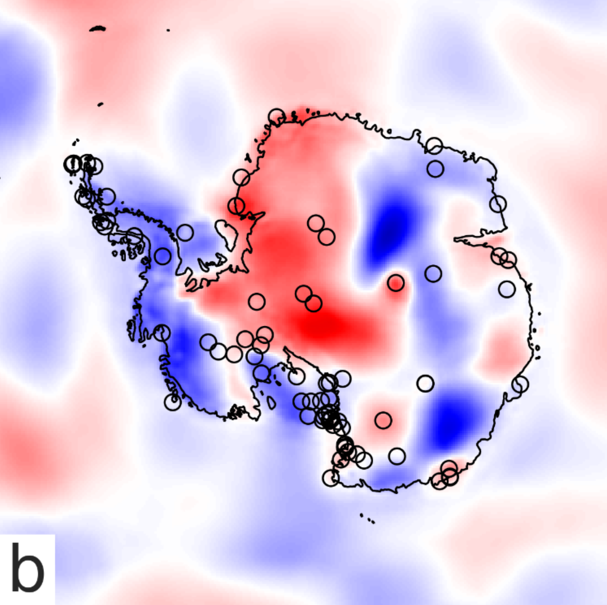 |
Environmental sensor placement with convolutional Gaussian neural processes
Environmental sensors are crucial for monitoring weather conditions and the impacts of climate change. However, it is challenging to place sensors in a way that maximises the informativeness of their measurements, particularly in remote regions like Antarctica. Probabilistic machine learning models can suggest informative sensor placements by finding sites that maximally reduce prediction uncertainty. Gaussian process (GP) models are widely used for this purpose, but they struggle with capturing complex non-stationary behaviour and scaling to large datasets. This paper proposes using a convolutional Gaussian neural process (ConvGNP) to address these issues. A ConvGNP uses neural networks to parameterise a joint Gaussian distribution at arbitrary target locations, enabling flexibility and scalability. Using simulated surface air temperature anomaly over Antarctica as training data, the ConvGNP learns spatial and seasonal non-stationarities, outperforming a non-stationary GP baseline. In a simulated sensor placement experiment, the ConvGNP better predicts the performance boost obtained from new observations than GP baselines, leading to more informative sensor placements. We contrast our approach with physics-based sensor placement methods and propose future steps towards an operational sensor placement recommendation system. Our work could help to realise environmental digital twins that actively direct measurement sampling to improve the digital representation of reality. Tom R. Andersson, Wessel Bruinsma, Stratis Markou, James Requeima, Alejandro Coca-Castro, Anna Vaughan, Anna-Louise Ellis, Matthew Lazzara, Daniel C. Jones, J. Scott Hosking, Richard E. TurnerEnvironmental Data Science (Climate Informatics 2023 Special Issue) paper |
| 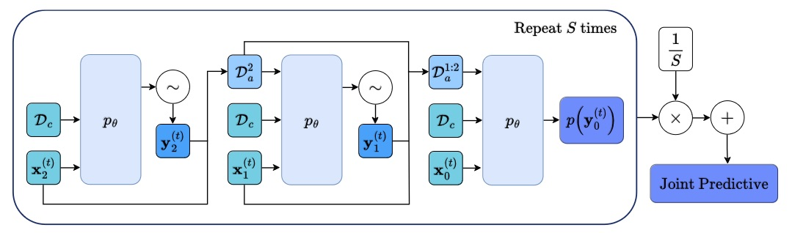 |
Diffusion-Augmented Neural Processes
Over the last few years, Neural Processes have become a useful modelling tool in many application areas, such as healthcare and climate sciences, in which data are scarce and prediction uncertainty estimates are indispensable. However, the current state of the art in the field (AR CNPs; Bruinsma et al., 2023) presents a few issues that prevent its widespread deployment. This work proposes an alternative, diffusion-based approach to NPs which, through conditioning on noised datasets, addresses many of these limitations, whilst also exceeding SOTA performance. Lorenzo Bonito, James Requeima, Aliaksandra Shysheya, Richard E. TurnerNeurIPS Workshop on Diffusion Models, 2023. paper |
| 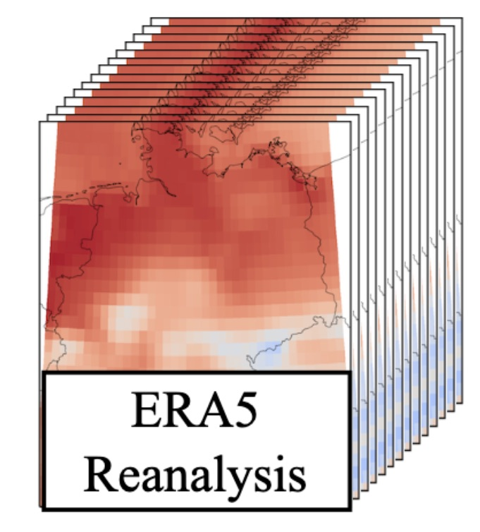 |
Sim2Real for Environmental Neural Processes
Machine learning (ML)-based weather models have recently undergone rapid improvements. These models are typically trained on gridded reanalysis data from numerical data assimilation systems. However, reanalysis data comes with limitations, such as assumptions about physical laws and low spatiotemporal resolution. The gap between reanalysis and reality has sparked growing interest intraining ML models directly on observations such as weather stations. Modelling scattered and sparse environmental observations requires scalable and flexible ML architectures, one of which is the convolutional conditional neural process (ConvCNP). ConvCNPs can learn to condition on both gridded and off-the-gridcontext data to make uncertainty-aware predictions at target locations. However,the sparsity of real observations presents a challenge for data-hungry deep learning models like the ConvCNP. One potential solution is ‘Sim2Real’: pre-trainingon reanalysis and fine-tuning on observational data. We analyse Sim2Real with a ConvCNP trained to interpolate surface air temperature over Germany, using varying numbers of weather stations for fine-tuning. On held-out weather stations, Sim2Real training substantially outperforms the same model architecture trainedonly with reanalysis data or only with station data, showing that reanalysis datacan serve as a stepping stone for learning from real observations. Sim2Real could thus enable more accurate models for weather prediction and climate monitoring. Jonas Scholz, Tom R. Andersson, Anna Vaughan, James Requeima, Richard E. TurnerNeurIPS Workshop on Tackling Climate Change with Machine Learning, 2023. paper |
| 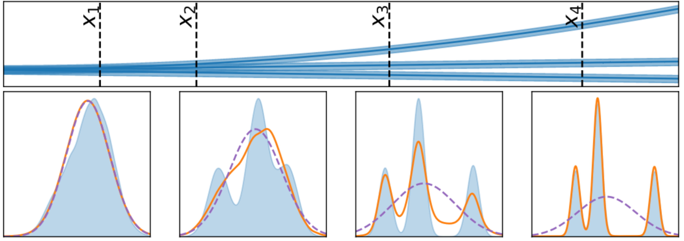 |
Autoregressive Conditional Neural Processes
Conditional neural processes (CNPs; Garnelo et al., 2018a) are attractive meta-learning models which produce well-calibrated predictions and are trainable via a simple maximum likelihood procedure. Although CNPs have many advantages, they are unable to model dependencies in their predictions. Various works propose solutions to this, but these come at the cost of either requiring approximate inference or being limited to Gaussian predictions. In this work, we instead propose to change how CNPs are deployed at test time, without any modifications to the model or training procedure. Instead of making predictions independently for every target point, we autoregressively define a joint predictive distribution using the chain rule of probability, taking inspiration from the neural autoregressive density estimator (NADE) literature. We show that this simple procedure allows factorised Gaussian CNPs to model highly dependent, non-Gaussian predictive distributions. Perhaps surprisingly, in an extensive range of tasks with synthetic and real data, we show that CNPs in autoregressive (AR) mode not only significantly outperform non-AR CNPs, but are also competitive with more sophisticated models that are significantly more computationally expensive and challenging to train. This performance is remarkable given that AR CNPs are not trained to model joint dependencies. Our work provides an example of how ideas from neural distribution estimation can benefit neural processes, and motivates research into the AR deployment of other neural process models. Wessel Bruinsma*, Stratis Markou*, James Requeima*, Andrew Y. K. Foong*, Tom R. Andersson, Anna Vaughan, Anthony Buonomo, J. Scott Hosking, Richard E. TurnerInternational Conference on Learning Representations, 2023. paper |
|
|
Challenges and Pitfalls of Bayesian Unlearning
Machine unlearning refers to the task of removing a subset of training data, thereby removing its contributions to a trained model. Approximate unlearning are one class of methods for this task which avoid the need to retrain the model from scratch on the retained data. Bayes' rule can be used to cast approximate unlearning as an inference problem where the objective is to obtain the updated posterior by dividing out the likelihood of deleted data. However this has its own set of challenges as one often doesn't have access to the exact posterior of the model parameters. In this work we examine the use of the Laplace approximation and Variational Inference to obtain the updated posterior. With a neural network trained for a regression task as the guiding example, we draw insights on the applicability of Bayesian unlearning in practical scenarios. Ambrish Rawat, James Requeima, Wessel Bruinsma, Richard E. TurnerUpdatable Machine Learning Workshop, ICML 2022. paper |

|
Practical Conditional Neural Processes Via Tractable Dependent Predictions
Conditional Neural Processes (CNPs; Garnelo et al., 2018a) are meta-learning models which leverage the flexibility of deep learning to produce well-calibrated predictions and naturally handle off-the-grid and missing data. CNPs scale to large datasets and train with ease. Due to these features, CNPs appear well-suited to tasks from environmental sciences or healthcare. Unfortunately, CNPs do not produce correlated predictions, making them fundamentally inappropriate for many estimation and decision making tasks. Predicting heat waves or floods, for example, requires modelling dependencies in temperature or precipitation over time and space. Existing approaches which model output dependencies, such as Neural Processes (NPs; Garnelo et al., 2018b) or the FullConvGNP (Bruinsma et al., 2021), are either complicated to train or prohibitively expensive. What is needed is an approach which provides dependent predictions, but is simple to train and computationally tractable. In this work, we present a new class of Neural Process models that make correlated predictions and support exact maximum likelihood training that is simple and scalable. We extend the proposed models by using invertible output transformations, to capture non-Gaussian output distributions. Our models can be used in downstream estimation tasks which require dependent function samples. By accounting for output dependencies, our models show improved predictive performance on a range of experiments with synthetic and real data. Stratis Markou*, James Requeima*, Wessel Bruinsma, Anna Vaughan, Richard E. TurnerInternational Conference on Learning Representations, 2022. paper |

|
Efficient Gaussian Neural Processes for Regression
Conditional Neural Processes (CNP; Garnelo et al., 2018) are an attractive family of meta-learning models which produce well-calibrated predictions, enable fast inference at test time, and are trainable via a simple maximum likelihood procedure. A limitation of CNPs is their inability to model dependencies in the outputs. This significantly hurts predictive performance and renders it impossible to draw coherent function samples, which limits the applicability of CNPs in down-stream applications and decision making. Neural Processes (NPs; Garnelo et al., 2018) attempt to alleviate this issue by using latent variables, relying on these to model output dependencies, but introduces difficulties stemming from approximate inference. One recent alternative (Bruinsma et al.,2021), which we refer to as the FullConvGNP, models dependencies in the predictions while still being trainable via exact maximum-likelihood. Unfortunately, the FullConvGNP relies on expensive 2D-dimensional convolutions, which limit its applicability to only one-dimensional data. In this work, we present an alternative way to model output dependencies which also lends itself maximum likelihood training but, unlike the FullConvGNP, can be scaled to two- and three-dimensional data. The proposed models exhibit good performance in synthetic experiments. Stratis Markou*, James Requeima*, Wessel Bruinsma, Richard E. TurnerICML Uncertainty and Robustness in Deep Learning Workshop, 2021. paper |

|
The Gaussian Neural Process
Neural Processes (NPs; Garnelo et al., 2018) are a rich class of models for meta-learning that map data sets directly to predictive stochastic processes. We provide a rigorous analysis of the standard maximum-likelihood objective used to train conditional NPs. Moreover, we propose a new member to the Neural Process family called the Gaussian Neural Process (GNP), which models predictive correlations, incorporates translation equivariance, provides universal approximation guarantees, and demonstrates encouraging performance. Wessel Bruinsma, James Requeima, Andrew Y. K. Foong, Jonathan Gordon, Richard E. TurnerAdvances in Approximate Bayesian Inference Symposium, 2020. paper |

|
Meta-Learning Stationary Stochastic Process Prediction with Convolutional Neural Processes
Stationary stochastic processes (SPs) are a key component of many probabilistic models, such as those for off-the-grid spatio-temporal data. They enable the statistical symmetry of underlying physical phenomena to be leveraged, thereby aiding generalization. Prediction in such models can be viewed as a translation equivariant map from observed data sets to predictive SPs, emphasizing the intimate relationship between stationarity and equivariance. Building on this, we propose the Convolutional Neural Process (ConvNP), which endows Neural Processes (NPs) with translation equivariance and extends convolutional conditional NPs to allow for dependencies in the predictive distribution. The latter enables ConvNPs to be deployed in settings which require coherent samples, such as Thompson sampling or conditional image completion. Moreover, we propose a new maximum-likelihood objective to replace the standard ELBO objective in NPs, which conceptually simplifies the framework and empirically improves performance. We demonstrate the strong performance and generalization capabilities of ConvNPs on 1D regression, image completion, and various tasks with real-world spatio-temporal data. Andrew Y. K. Foong*, Wessel Bruinsma*, Jonathan Gordon*, Yann Dubois, James Requeima,Richard E. Turner Neural Information Processing Systems, 2020. paper |

|
TaskNorm: Rethinking Batch Normalization for Meta-Learning
Modern meta-learning approaches for image classification rely on increasingly deep networks to achieve state-of-the-art performance, making batch normalization an essential component of meta-learning pipelines. However, the hierarchical nature of the meta-learning setting presents several challenges that can render conventional batch normalization ineffective, giving rise to the need to rethink normalization in this setting. We evaluate a range of approaches to batch normalization for meta-learning scenarios, and develop a novel approach that we call TaskNorm. Experiments on fourteen datasets demonstrate that the choice of batch normalization has a dramatic effect on both classification accuracy and training time for both gradient based and gradient-free meta-learning approaches. Importantly, TaskNorm is found to consistently improve performance. Finally, we provide a set of best practices for normalization that will allow fair comparison of meta-learning algorithms. John Bronskill*, Jonathan Gordon*, James Requeima, Sebastian Nowozin, Richard E. TurnerInternational Conference on Learning Representations, 2020. paper |

|
Convolutional Conditional Neural Processes
We introduce the Convolutional Conditional Neural Process (ConvCNP), a new member of the Neural Process family that models translation equivariance in the data. Translation equivariance is an important inductive bias for many learning problems including time series modelling, spatial data, and images. The model embeds data sets into an infinite-dimensional function space as opposed to a finite-dimensional vector space. To formalize this notion, we extend the theory of neural representations of sets to include functional representations, and demonstrate that any translation-equivariant embedding can be represented using a convolutional deep set. We evaluate ConvCNPs in several settings, demonstrating that they achieve state-of-the-art performance compared to existing NPs. We demonstrate that building in translation equivariance enables zero-shot generalization to challenging, out-of-domain tasks. Jonathan Gordon*, Wessel Bruinsma*, Andrew Y. K. Foong, James Requeima, Yann Dubois,Richard E. Turner International Conference on Learning Representations, 2020. paper |

|
Fast and Flexible Multi-Task Classification Using Conditional Neural Adaptive Processes
The goal of this paper is to design image classification systems that, after an initial multi-task training phase, can automatically adapt to new tasks encountered at test time. We introduce a conditional neural process based approach to the multi-task classification setting for this purpose, and establish connections to the meta-learning and few-shot learning literature. The resulting approach, called CNAPs, comprises a classifier whose parameters are modulated by an adaptation network that takes the current task's dataset as input. We demonstrate that CNAPs achieves state-of-the-art results on the challenging Meta-Dataset benchmark indicating high-quality transfer-learning. We show that the approach is robust, avoiding both over-fitting in low-shot regimes and under-fitting in high-shot regimes. Timing experiments reveal that CNAPs is computationally efficient at test-time as it does not involve gradient based adaptation. Finally, we show that trained models are immediately deployable to continual learning and active learning where they can outperform existing approaches that do not leverage transfer learning. James Requeima*, Jonathan Gordon*, John Bronskill*, Sebastian Nowozin, Richard E. TurnerConference on Neural Information Processing Systems, spotlight paper, 2019. paper | bibtex | code |

|
The Gaussian Process Autoregressive Regression Model (GPAR)
Multi-output regression models must exploit dependencies between outputs to maximise predictive performance. The application of Gaussian processes (GPs) to this setting typically yields models that are computationally demanding and have limited representational power. We present the Gaussian Process Au- toregressive Regression (GPAR) model, a scalable multi-output GP model that is able to capture nonlinear, possibly input-varying, dependencies between outputs in a simple and tractable way: the product rule is used to decompose the joint distribution over the outputs into a set of conditionals, each of which is modelled by a standard GP. GPAR’s efficacy is demonstrated on a variety of synthetic and real-world problems, outperforming existing GP models and achieving state-of-the-art performance on established benchmarks. James Requeima*, Will Tebbutt*, Wessel Bruinsma*, Richard E. TurnerInternational Conference on Artificial Intelligence and Statistics, 2019. paper | bibtex | code |

|
Characterizing and Warping the Function space of Bayesian Neural Networks
In this work we develop a simple method to construct priors for Bayesian neural networks that incorporates meaningful prior information about functions. This method allows us to characterize the relationship between weight space and function space. Daniel Flam-Shepherd, James Requeima, David Duvenaud,NeurIPS Bayesian Deep Learning Workshop, 2018. paper | bibtex |

|
Parallel and distributed Thompson sampling for large-scale accelerated exploration of chemical space
Chemical space is so large that brute force searches for new interesting molecules are infeasible. High-throughput virtual screening via computer cluster simulations can speed up the discovery process by collecting very large amounts of data in parallel, e.g., up to hundreds or thousands of parallel measurements. Bayesian optimization (BO) can produce additional acceleration by sequentially identifying the most useful simulations or experiments to be performed next. However, current BO methods cannot scale to the large numbers of parallel measurements and the massive libraries of molecules currently used in high-throughput screening. Here, we propose a scalable solution based on a parallel and distributed implementation of Thompson sampling (PDTS). We show that, in small scale problems, PDTS performs similarly as parallel expected improvement (EI), a batch version of the most widely used BO heuristic. Additionally, in settings where parallel EI does not scale, PDTS outperforms other scalable baselines such as a greedy search, ϵ-greedy approaches and a random search method. These results show that PDTS is a successful solution for large-scale parallel BO. José Miguel Hernández-Lobato*, James Requeima*, Edward O. Pyzer-Knapp, Alán Aspuru-GuzikInternational Conference on Machine Learning, 2017. paper | bibtex |

|
Mapping Gaussian Process Priors to Bayesian Neural Networks
Currently, BNN priors are specified over network parameters with little thought given to the distributions over functions that are implied. What do N(0, 1) parameter priors look like in function space and is this a reasonable assumption? We should be thinking about priors over functions and that network architecture should be an approximation strategy for these priors. Gaussian Processes offer an elegant mechanism in the kernel to specify properties we believe our underlying function has. In this work we propose a method to, using a BNN, approximate the distribution over functions given by a GP prior. Daniel Flam-Shepherd, James Requeima, David DuvenaudNeurIPS Bayesian Deep Learning Workshop, 2017. paper | bibtex |

|
Multi-scaling of wholesale electricity prices
We empirically analyze the most volatile component of the electricity price time series from two North-American wholesale electricity markets. We show that these time series exhibit fluctuations which are not described by a Brownian Motion, as they show multi-scaling, high Hurst exponents and sharp price movements. We use the generalized Hurst exponent (GHE, H(q)) to show that although these time-series have strong cyclical components, the fluctuations exhibit persistent behaviour, i.e., H(q)>0.5. We investigate the effectiveness of the GHE as a predictive tool in a simple linear forecasting model, and study the forecast error as a function of H(q), with q=1 and q=2. Our results suggest that the GHE can be used as prediction tool for these time series when the Hurst exponent is dynamically evaluated on rolling time windows of size ≈50−100 hours. These results are also compared to the case in which the cyclical components have been subtracted from the time series, showing the importance of cyclicality in the prediction power of the Hurst exponent. Francesco Caravelli, James Requeima, Cozmin Ududec, Ali Ashtari, Tiziana Di Matteo, Tomaso AstearXiv e-print. paper | bibtex |
Theses
|
|
PhD Thesis. The Neural Processes Family: Translation Equivariance and Output Dependencies
Neural processes are a family of meta-learning models which combine the flexibility of deep learning with the uncertainty awareness of probabilistic models. Neural processes produce well-calibrated predictions, enable fast inference at test time, and have flexible data-handling properties that make them a good candidate for messy real-world datasets and applications. This thesis focuses on addressing two shortcomings when applying neural processes to real-world applications by i) incorporating translation equivariance into the architecture of neural processes rather than requiring the model to learn this inductive bias directly from data and ii) developing methods for neural processes to parametrize rich predictive distributions that can model dependencies between output-space variables and produce coherent samples. James Requeima, Advisors: Richard E. Turner, José Miguel Hernández-Lobatopaper | bibtex |
|
|
Master's Thesis. Integrated Predictive Entropy Search for Bayesian Optimization
Predictive Entropy Search (PES) is an information-theoretic based acquisition function that has been demonstrated to perform well on several applications. PES harnesses our estimate of the uncertainty in our objective to recommend query points that maximize the amount of information gained about the local maximizer. It cannot, however, harness the potential information gained in our objective model hyperparameters for better recommendations. This dissertation introduces a modification to the Predictive Entropy Search acquisition function called Integrated Predictive Entropy Search (IPES) that uses a fully Bayesian treatment of our objective model hyperparameters. The IPES aquisition function is the same as the original PES aquision function except that the hyperparameters have been marginalized out of the predictive distribution and so it is able to recommend points taking into account the uncertainty and reduction in uncertainty in the hyperparameters. It can recommend queries that yield more information about the local maximizer through information gained about hyperparameters values. James Requeima, Advisor: Zoubin Ghahramanipaper | bibtex | code |
|
|
Master's Thesis. Relative sectional curvature in compact angled 2-complexes
We define the notion of relative sectional curvature for 2-complexes, and prove that a compact angled 2-complex that has negative sectional curvature relative to planar sections has coherent fundamental group. We analyze a certain type of 1-complex that we call flattenable graphs Γ → X for an compact angled 2-complex X, and show that if X has nonpositive sectional curvature, and if for every flattenable graph π1(Γ) → π1(X) is finitely presented, then X has a coherent fundamental group. Finally we show that if X is a compact angled 2-complex with negative sectional curvature relative to π-gons and planar sections then π1(X) is coherent. Some results are provided which are useful for creating examples of 2-complexes with these properties, or to test a 2-complex for these properties. James Requeima, Advisor: Daniel Wisepaper | bibtex |